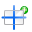
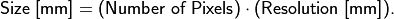
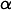
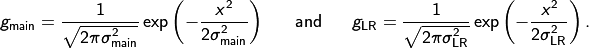
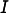

Detector
This tutorial explains the basics of aRTist’s virtual detector and how to use the DetectorCalc module to calculate characteristics for scintillator-based flat panel detectors.
We do not continue with the project file from the last tutorial, but will start with a fresh new aRTist scene.
Note
If you still have the previous project loaded in aRTist, choose File → New Project from the menu to create a new, empty project.
An Example Scene
In this tutorial, we will reproduce an example projection image taken with a real CT scanner. It is an image of a PMMA step cylinder (Fig. 116). To follow the steps, you can download a package that contains the projection images (in TIFF format) and the STL file for the surface model of the cylinder that we will use in aRTist:
detector_tutorial_additional_data.zip (5.8 MB)
Note that you get three projection images: a free-beam flat field image, a “raw” projection image of the step cylinder, and a flat-field corrected projection image. All three images are already dark-field corrected (i.e. the grey value at zero intensity is also zero). This makes it easier for us to build the detector in aRTist.
{kind=link}
Fig. 116 (a) Raw projection image of the PMMA step cylinder, (b) free-beam flat field image and (c) flat-field corrected projection image. All three images are already dark-field corrected.

Fig. 117 Geometry used to acquire the example projection image.
The CT geometry shown in Fig. 117 was used to acquire the projection image. The first step we will take is to reproduce this geometry in aRTist.
Note
Set the Z position of the source to
500mm.Make sure that  Center new parts is turned off in the toolbar. Our cylinder surface model already comes with the correct coordinates. Otherwise, you will have to place the cylinder yourself (see next step).
Open the file
PMMA_Cylinder.stlfrom the downloaded package of additional data for this tutorial, or drag and drop it into the aRTist window. It should appear at a Z position of 350 mm (the ODD). If not, set the Z position manually.Create a new material called PMMA (Fig. 118). Its chemical composition is C5H8O2, it has a density of 1.19 g/cm3. Use the
 materials editor and don’t forget to click Apply before closing it.
materials editor and don’t forget to click Apply before closing it.Assign the new PMMA material to the step cylinder in the Assembly List.
{kind=link}
Your scene should now look like in Fig. 119.

Fig. 118 PMMA material properties for the virtual step cylinder.

Fig. 119 We have prepared the basic CT geometry and material properties. We will take care of the detector size later.
Pixels & Size
Let’s take a look at the detector configuration.
Note
Switch to the Detector tab in the parameter panel (Fig. 120).

Fig. 120 The default geometry parameters of the detector.
In the Geometry section, we can set up the detector’s size, its number of pixels, and the pixel size (resolution). Each of these three parameters is coupled to the other two:

In the upper row, you can choose which one aRTist should calculate from the other two.
Note
Select Size [mm], aRTist should calculate it for us. We will enter the following two other parameters, which we know (Fig. 121).
Pixel: X:
1200, Y:1400Res. [mm]: X:
0.2, Y:0.2
The detector size is calculated automatically. You should now see a preview image that contains the complete step cylinder (Fig. 122).
{kind=link}
Fig. 121 The detector’s geometry parameters for our projection image.

Fig. 122 The detector has the correct size now.
Note that you can set Multisampling for each pixel. It works in the same way as for the source. If you activate a certain type of pixel multisampling, a ray will be simulated connecting each source point with each pixel point (or subpixel). As described for the Spot Type in the Source tutorial, you can define regular subpixel grids (e.g. 3x3) or quasi-random patterns using Poisson Disc Sampling (any integers, e.g. 11). The number of rays that will be simulated per pixel is the product of the source spot multisampling points and the detector (pixel) multisampling points. If you choose source dependent for the pixel multisampling (the default setting), the pattern defined for the source will also be used for each pixel (with the exception that it will be flipped in both spatial directions compared to the source pattern). Each spot point is then connected to its corresponding point on the pixel: the number of rays per pixel will remain the number of spot points and will not multiply (Fig. 123).

Fig. 123 Overview of the multi-sampling behavior for different source-detector combinations.
The Curvature is an experimental feature that can be used to simulate detectors that are curved in a certain direction of space. A possible application could be the simulation of medical CT, but this feature will not be covered here.
Characteristic
The function that assigns a grey value to the energy density at a pixel is called the Characteristic. The default detector in aRTist is the so-called 1:1 detector. It converts all energy that arrives at a pixel linearly into grey values without losses. Let’s take a closer look at the Characteristic of the 1:1 detector.
Note
Make sure that 1:1 is selected as the detector type.
From the menu bar, choose Tools → Detector Properties. The DetectorViewer will open in a new window (Fig. 124).
{kind=link}
Fig. 124 The DetectorViewer displays the Characteristic curve of the 1:1 detector.
As you can see, the input unit of the 1:1 detector is the energy density (in J/m2), the same as the output unit. This means that a pixel in the projection image will have a grey value that directly corresponds to the energy density at the pixel. The result is a purely linear function. This is a very simple Characteristic, but it helps us understand what is going on.
Note
Close the DetectorViewer.
When you take a look at the preview image (Fig. 125) you will notice that the Image Viewer displays the energy density at the detector as a map of grey values. When you move your mouse around the image, the energy density will be displayed as a floating point number. They look suspiciously like “real” grey values, but note that “real” grey values are usually integers. In the Image Viewer, you can switch the image between primary intensities and the Energy density (J/m²). In terms of visible grey values they are the same, but they represent different physical quantities and are connected by the integration time τ:

Fig. 125 The Image Viewer displays the energy density at the detector as grey values.
Exposure
The energy density at each pixel depends on the integration time τ. In the current standard settings of the detector (Fig. 126), the integration time is automatically calculated such that the brightest point in the image (point of maximum exposure) will reach an energy density of 50000 J/m². You can see this in the display range in Fig. 125. To reach such a high energy density, a simulated integration time of more than 11000 weeks is necessary. This might seem confusing, but it is simply the result of the purely linear 1:1 characteristics. In the following section we will build a detector with a grey value characteristic that associates higher grey values with smaller energy densities and therefore reaches realistic integration times.
{kind=link}
Fig. 126 Exposure settings.
Instead of the maximum intensity, you can set a different reference point where the expected grey value should be reached. You can also turn off the reference point and enter the exposure time manually.
Realistic Detectors
The pre-defined detectors in aRTist are usually not of interest if you are trying to reproduce a realistic flat panel CT detector. In the following example, we will reproduce the real-world projection image of the step cylinder and create our own detector using the DetectorCalc module.
Spectrum and Current
We already set the scene geometry and the material of the PMMA cylinder correctly. Before we can take care of the detector, we need to simulate the spectrum and the tube current that were used to take the projection image.
Note
Switch to the Source parameters and use the  Spectrum Calculator to generate a spectrum with the following parameters: we need a general tube at 130 kV with a tungsten (W) reflection target (45° target and incidence angle), a 0.5 mm Be window and a 0.1 mm Cu filter (Fig. 127).
Spectrum Calculator to generate a spectrum with the following parameters: we need a general tube at 130 kV with a tungsten (W) reflection target (45° target and incidence angle), a 0.5 mm Be window and a 0.1 mm Cu filter (Fig. 127).
Press  Compute to calculate the spectrum, then close the Spectrum Calculator.
Compute to calculate the spectrum, then close the Spectrum Calculator.
{kind=link}
Fig. 127 Settings to reproduce the X-ray tube spectrum that was used to take the projection image.
You should now see the spectrum shown in Fig. 128. We still need to set the current of 100 µA that was used for the real-world tube when the projection image was taken.
Note
For exposure [mA or GBq] enter 0.1. (The unit is mA, Fig. 128).
{kind=link}
Fig. 128 We calculated a spectrum that matches the real-world tube parameters that were used to take the projection image.
We will need this spectrum as an .xrs file later when creating our new detector.
Note
Underneath the spectrum graph, click to save the current spectrum as an .xrs file at a location of your choice. (We will need this file later in the tutorial.)
{kind=link}
When you switch back to the Detector parameters, you will see that the exposure time dropped from more than 11000 weeks to “just” 5 weeks to reach the 50000 J/m² at the point of maximum intensity (Fig. 129). Our new tube and current obviously lead to a much higher flux at the detector.
{kind=link}
Fig. 129 The exposure time dropped to “just” 5 weeks with our new tube settings.
DetectorCalc
We have now prepared everything to build our new detector using the DetectorCalc module. This module’s purpose is to generate realistic sensitivity, noise and grey value response curves for a given X-ray spectrum and scintillator material.
Note
From the menu bar, open Modules → DetectorCalc (Fig. 130).
{kind=link}
Fig. 130 We describe our general detector settings in the DetectorCalc module.
In the General section, we enter the obvious parameters of our detector: its size, number of pixels, grey value dynamics and we will give it a name.
Note
Give your detector any name you like. In this example, we called it the
Step Cylinder Detector.Enter the pixel size:
0.2mm.Enter the Pixel count X:
1200(the width of our projection image).Enter the Pixel count Y:
1400(the height of our projection image).Maximum grey value:
65535(i.e. a 16 bit detector).Grey value quantum:
1(the detector’s output are integer grey values in steps of 1).
The next section is called Sensitivity. It asks for the detector parameters relevant to its spectral absorption characteristics, namely the scintillator properties. The detector that was used to capture the projection image has a CsI scintillator with a thickness of 150 µm.
Note
If CsI is not yet in your materials list, you need to create it using the Materials Editor (Fig. 131). You can leave the DetectorCalc window open while doing this.
Material:
CsI,Density:
4.51g/cm³,Composition:
CsI.
We also create a material for the carbon fibre in front of the detector. It serves as a protection and (slightly) filters the radiation:
Material:
Carbon,Density:
1.8g/cm³,Composition:
C.

Fig. 131 If they are not yet in your list of materials, you will have to add CsI for the scintillator and Carbon for the protective layer.
We can now set the sensitivity and filtration properties in the DetectorCalc module.
Note
For the (scintillator) Material, choose
CsI.For its Thickness, set
0.15mm.Leave the Steps at
2. This parameter is used in the X-ray generation model and gives the maximum number of consecutive interactions to be simulated.Min Energy:
0.Max Energy:
Infinity.Signal Type:
Average Energy. (Common flat panel detectors are energy-integrating devices, this is what the average energy signal type does.)Add the 0.5 mm Carbon filter to the filtration list.
(See Fig. 130.)
Reference Exposure
So far, those are the general properties of the detector. Now we need to switch over to the Exposure tab (Fig. 132) and provide reference measurements from the projection image that we try to reproduce. DetectorCalc will use those reference values to calculate matching characteristics curves, as we will see later.

Fig. 132 In the exposure settings, we will enter reference values that we have measured in our real-world projection images.
The first section, called Reference exposure settings, asks for the general circumstances under which the reference image was taken.
Note
For the Spectrum, select the
.xrsspectrum file that you saved after we generated the X-ray spectrum.The image was taken at a tube current of
0.1mA.The exposure time for the image was
0.5s.You need to specify the Number of frames that have been averaged for the reference image. This is taken into account for the noise characteristics. If you do not intend to simulate any different frame averaging than the one from the reference image, it is advisable to pretend that the number of frames has been
1. More about the details of frame averaging is explained later.The Source detector distance was
500mm.Keep Filter spectrum with environment material activated: this will take the X-ray absorption of air into account when reproducing the grey values.
DetectorCalc now knows the circumstances under which the reference image was taken and is able to calculate a good estimate for the primary intensity at the detector. It still needs to know how these primary intensities correspond to grey values, and also asks for the noise (SNR, signal-to-noise-ratio) in the reference image and the detector’s unsharpness.
Unsharpness
aRTist’s unsharpness definition conforms to the guideline ASTM E2597/E2597M-14 where it is measured using a duplex wire standard [5]. The unsharpness is achieved by treating the analytical projection image in aRTist with a Gaussian smoothing kernel. Its standard deviation is chosen such that the resulting unsharpness will match the mentioned guideline.
Apart from this main unsharpness, aRTist offers a second component called the long range unsharpness. This component becomes visible when measuring line profiles across an edge image (Fig. 133).

Fig. 133 The main unsharpness and the long range unsharpness have an effect on the line profile across an edge image.
aRTist uses alpha blending to combine the main unsharpness and the long range unsharpness. For a given ideal point function δ as the input, the resulting point spread function (PSF) would be
with the long range ratio  (the “prominence” of the long range component), the convolution operator and the two Gaussian smoothing kernels

We will not reproduce the long range unsharpness for our detector as this will be beyond the scope of this tutorial.
Note
For the basic spatial resolution, enter
0.18mm. This is an unsharpness property of the detector that is known, but cannot be deducted from the projection image of the step cylinder.For the long range unsharpness and the unsharpness ratio, enter
0. This is an advanced topic not covered here, but feel free to try it out on your own.
Grey Value & Noise
DetectorCalc asks for a reference grey value. This is the grey value at the maximum free-beam intensity, which we can measure in the free-beam flat field image (Fig. 134). For our example, we get a free-beam grey value of about 8410.
{kind=link}
Fig. 134 Measuring the reference grey value in the free-beam image.
To measure the SNR, we will use a free-beam region in the flat-field corrected image (Fig. 135). The first reason is that the flat-field corrected image is the only one where we have a homogeneous background intensity where we can measure the noise (in terms of the grey value standard deviation) without the interference of the intensity profile of the flat field. The second reason is that aRTist typically uses an ideal, noise-free flat field image for the flat-field correction, which means that we can simulate the full noise in the raw projection image and won’t have to worry about noise contributions from the flat-field image. A more correct way to do this would be to measure the noise in the centre of a flat-field corrected free-beam image instead of choosing an off-centre region like in Fig. 135. However, for simplicity, we continue with this approximation.
{kind=link}
Fig. 135 Measuring the reference SNR in the flat-field corrected projection image. Note that the mean grey value does not match the previously measured maximum grey value in the flat-field image because our flat-field correction renormalizes to the mean intensity of the flat-field image, not its maximum value.
Enter these two reference values into the DetectorCalc window:
Note
For grey value, enter
8410.For SNR unnormalized, enter
615.
We have now prepared all parameters to generate our new detector.
Note
Press Run to create the new detector. You will be asked to save the new detector as an .aRTdet file, which is aRTist’s file format for detector descriptions. Save it where you can find it again, we will inspect the file later.
After you created the file, the actual computation might take a while, and you might need some patience. When you are asked if you want to load the new detector definition, click Yes to import the detector file that you just generated.
The new detector is now selected as the current detector type in the parameter panel (Fig. 136). We now need to switch the exposure to a fixed exposure time.
Note
Turn off the reference point and manually set an exposure time of 0.5 seconds (Fig. 136). This was the original exposure time for the real-world projection image that we used to configure DetectorCalc.

Fig. 136 The new detector is now imported. We need to set the exposure time manually.
The grey values that you will get in the preview image should now already be close to the grey values in the raw projection image.
Attenuation, Deposit & Sensitivity
DetectorCalc has generated some characteristic curves from the given information. We can inspect them using the DetectorViewer.
Note
From the menu bar, select Tools → Detector Properties. Turn on the options log x and log y underneath the graph.
The DetectorViewer shows the general properties of your new detector in the left column, and a graph (or text table) of its spectral characteristics in the window’s right-hand area. You can choose the Curve from the drop-down menu in the upper left section.
The first important curve is the Attenuation (Fig. 137). In aRTist’s vocabulary, this is the probability that an incoming photon of a certain energy (keV) interacts with the scintillator (instead of just passing through).
{kind=link}
Fig. 137 The DetectorViewer shows the attenuation curve.
Depending on the underlying physics of the particle interactions, not all photons will deposit their full energy in the scintillator in a detectable way. The second important curve is the Deposit, which shows the average amount of “usable” energy that a given photon would store in the scintillator in the event of an attenuation.
{kind=link}
Fig. 138 The DetectorViewer shows the deposit curve.
The product of these two shown curves is called the Sensitivity (Fig. 139). It gives the mean deposited energy (keV) in a pixel for an incoming photon of the given energy (keV). The sensitivity curve is the foundation of the detector’s spectral energy characteristics and is used, together with the X-ray spectrum, the X-ray current (and overall photon flux), and the area of a pixel, to calculate the primary intensity (in J/m²/s) at the detector pixels.
{kind=link}
Fig. 139 The DetectorViewer shows the sensitivity curve.
To associate a grey value with the total energy density at a pixel (in J/m², accumulated from the primary intensity during the integration time), another curve is important: the Characteristic (Fig. 140). We have already seen it before at the 1:1 detector. For our new detector, DetectorCalc has generated a purely linear function which associates no incoming energy with the grey value 0. It has used the maximum free-beam intensity and our reference grey value to extrapolate a second point for the characteristic curve and associated the maximum possible grey value of 65535 (for a 16-bit detector) with its corresponding energy density.
{kind=link}
Fig. 140 The DetectorViewer shows the characteristic curve.
Noise
The noise amplitude of a pixel is usually a function of the intensity, i.e., in aRTist a function of the energy density. One typical contribution comes from the shot noise of the X-ray source, which scales with the square root of its intensity and finally affects the grey value noise level. In DetectorCalc, we have defined the signal-to-noise ratio (SNR) at the maximum free beam intensity. This value was used to compute our detector’s noise curve (Fig. 141): it shows a strikingly square-rootish behaviour.
Note
Turn off the options log x and log y underneath the graph.
{kind=link}
Fig. 141 The DetectorViewer shows the noise curve.
Typically, the calculated noise curve has two components: an intensity-dependent component that models the shot noise of the X-ray source, and a structural component that models static and systematic differences between the pixel grey values. An analytical value for the shot noise component is calculated from the spectrum, integration time, current and pixel area. If the SNR that you entered in DetectorCalc is lower than this analytical value, the remainder will be satisfied using the structural, constant noise component. If the SNR is better than the analytical value, there might be something wrong with your flux or your projection image where you measured the SNR might be filtered to remove noise. In this case, DetectorCalc models a purely intensity-dependent (square-root) noise characteristic and ignores its own analytical value. If this is the case, DetectorCalc will issue a warning that you can see in the console (Tools → Show Console).
Grey Value Reproduction
One way to get a better match between the real and simulated grey values is to adapt the detector’s characteristics curve. To do so, we need to create a table that lists some simulated energy densities and their associated expected grey values. First, we need a primary intensity image.
Note
In the Image Viewer, switch to primary intensities (Fig. 142).
In the toolbar, press  to run a full simulation. In the Image Viewer, press
to run a full simulation. In the Image Viewer, press  to save the primary intensities as an image file.
to save the primary intensities as an image file.
{kind=link}
Fig. 142 The Image Viewer displays the primary intensities.
We will now open the primary intensity image and the real CT image side by side in an external image viewer. In this tutorial, we will use ImageJ. For a few small selected regions of interest, we measure the mean primary intensity and the grey value that we would expect from the real CT image.
Note
Open the simulated primary intensity image and the uncorrected real CT image (
1636_PMMA_Cylinder_upright00092.tif) in ImageJ.Measure the mean primary intensity and mean grey value in a bunch of meaningful regions of interest. The ROIs in both images should be located at roughly the same location with respect to the cylinder. In Fig. 143 you can see an example for five different regions of interest that cover a representative grey value range.
{kind=link}
Fig. 143 Measuring the mean primary intensity (left) and the mean real grey value (right) for five distinct regions of interest.
We use a spreadsheet to keep track of the values (Fig. 144). We also add a grey value of zero for a primary intensity of zero (keep in mind that we work with dark-field corrected images here) and we add the grey value 8410 for the maximum free-beam intensity (see Fig. 134). To get the maximum free-beam primary intensity value of 0.00411101 W/m², you can deactivate the PMMA cylinder’s visibility, run a full free-beam simulation and read the maximum intensity value from the image viewer (see Fig. 145 for more instructions).
{kind=link}
Fig. 144 A spreadsheet lists the primary intensity and the target grey value for each ROI.

Fig. 145 Four steps to get the maximum free-beam primary intensity.
For the grey value characteristics (see Fig. 140) we need the energy density (J/m²) per pixel and associate it with a grey value. We can easily calculate the energy density by multiplying the primary intensity with the detector’s integration time (0.5 s). For this purpose, we add another column to our spreadsheet (Fig. 146).
{kind=link}
Fig. 146 We added a column for the energy density, which is the primary intensity multiplied by the integration time (0.5 s in our case).
Now we use a text editor to open the detector definition file that we created with the DetectorCalc module (Step Cylinder Detector.aRTdet). Find the section that’s called [Characteristics] (Fig. 147).
{kind=link}
Fig. 147 The detector definition file opened in a text editor. The relevant grey value characteristics section is highlighted.
From our spreadsheet, we copy the columns for the energy density and target grey value and replace the existing two value pairs. We also need to put an equals sign = in between each value pair as the file notation demands (Fig. 148).
{kind=link}
Fig. 148 The detector definition file with our custom grey-value characteristics.
We save this altered detector definition file and open it in aRTist to import our changes (drag&drop or File → Open). The detector viewer (Tools → Detector Properties) should now display our custom-made grey value characteristics (Fig. 149) and you should get grey values in your simulated projection image that match the real measurement much better.
{kind=link}
Fig. 149 The detector viewer displays our custom-made grey-value characteristics.
Flat-Field Correction
aRTist offers the ability to run a flat-field correction for simulated projection images. For this purpose, it has an internal buffer that can store a flat field image.
When you activate the flat field correction in the detector settings (Fig. 150), aRTist will use the image from the buffer for the flat field correction. If the buffer is empty (i.e., if you have not yet loaded or computed any flat field image), aRTist will temporarily turn off the visibility of all objects in your scene and temporarily turn off noise to calculate a flat field image. It will then restore the object visibility and noise and compute the actual projection image, complete with a flat-field correction.
This automatic computation of the flat-field image is done only once! Once the buffer contains an image, it will be used for any further flat fieldf corrections, even if you change your scene. To re-compute another flat field image, you can delete the current flat field image to clear the buffer. Once the buffer is empty, aRTist will automatically calculate a new flat field image when needed.
{kind=link}
{kind=link}
Fig. 150 Controls for the flat-field correction.
During the flat field correction, the projection image  will be “flattened” with the flat-field image . The result is then re-normalized to the mean free-beam grey value , such that you should get a homogenous background that has the mean intensity of a free-beam image.
You can use the button to compute a new flat field image for the buffer with your current scene settings. Remember to turn off any objects in the beam path yourself, otherwise they will appear in the flat field image.
{kind=link}
Frame Averaging
To simulate the averaging of multiple frames, aRTist does not simulate the requested number of frames and averages them. Instead, it temporarily adjusts the energy density on the detector and therefore looks up a different SNR on your detector’s noise curve (Fig. 151).

Fig. 151 Example for the temporary adjustment of the energy density axis to the original SNR curve for an averaging of two frames.
Note that aRTist uses a linear interpolation if your SNR curve does not reach the high energies that might be required by a high number of averaging frames. Also, depending on your specific SNR curve, you might get a result that differs from what you would expect from a simple arithmetic mean of two frames. aRTist uses this approach to cover the effects of structural pattern noise (which cannot be improved by averaging) and dynamic noise (e.g. Poisson noise of the source, thermal noise of the detector, etc.) in one single SNR curve.
Summary
In this tutorial, you learned how to use the DetectorCalc module to simulate a real-life detector. You got to know the different curves that aRTist uses to calculate the grey values of a projection image, and you saw an approach to alter the grey value characteristics to get better matching grey values.
tutorial_detector.aRTist (2.3 MB)